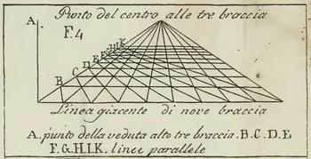
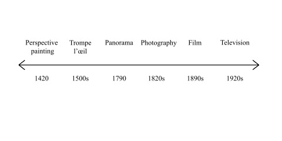
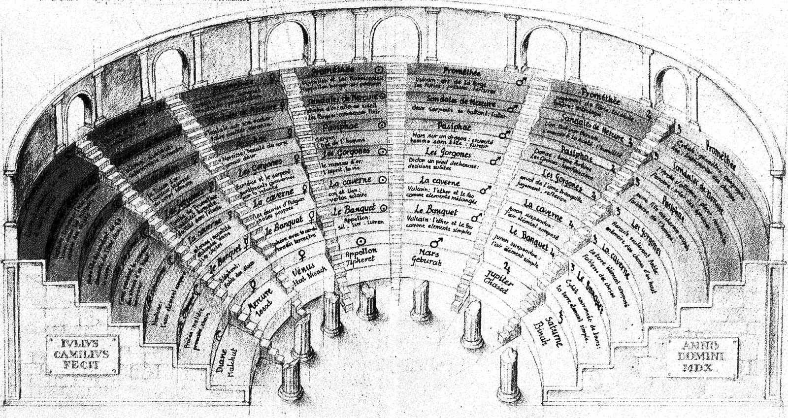

The History of Reality Media

As we argue in the printed Reality Media, AR and VR need to be understood not only as new technologies offering us new apparent realities. They are that, but they are also the latest in a series of such media. AR and VR make the same appeal that perspective painting, the panorama, film, and television (among others) have made in the past. All such media purport to capture the real, and all of them do so in relation to earlier media. All remediate. Although they may pretend to bypass earlier media and finally offer us the real, they all depend for their effect on an implicit or explicit comparisons with other media. The work of Renaissance artists was a demonstration that they had (they believed) surpassed medieval painting and could make images that closely resembled what we "really" saw in the world. Centuries later, enthusiasts for photography claimed that this "natural" process surpassed perspective painting in capturing the real. At the end of the nineteenth century, film made photography more "real" by setting images in motion. And today VR strives for a computer-generated photorealistic world that we can inhabit and interact with.
To the right is a timeline of some of the principal reality media that predate VR and AR.
In Chapter 2 of the printed book ("The History of Reality Media"), we stop just short of VR and AR, but we do include 360° video. In the History Gallery, we feature VR and AR as the (current) culmination of reality media. To display the evolving relationships among reality media, our gallery is patterned after a memory theater, the best-known example of which was Giulio Camillo's Theatre from the early 16th century.

(Image taken from https://socks-studio.com/2019/03/03/spatializing-knowledge-giulio-camillos-theatre-of-memory-1519-1544/)
According to Frances Yates in The Art of Memory (1966), Camillo's theater was a pseudo-magical structure for organizing all knowledge. We are not that ambitious, but we borrow his metaphor of an amphitheater to arrange and present reality media artifacts, beginning with trompe l'oiel painting and proceeding in tiers up to the highest row, which displays contemporary VR and AR.
Enter the History Gallery through this portal .